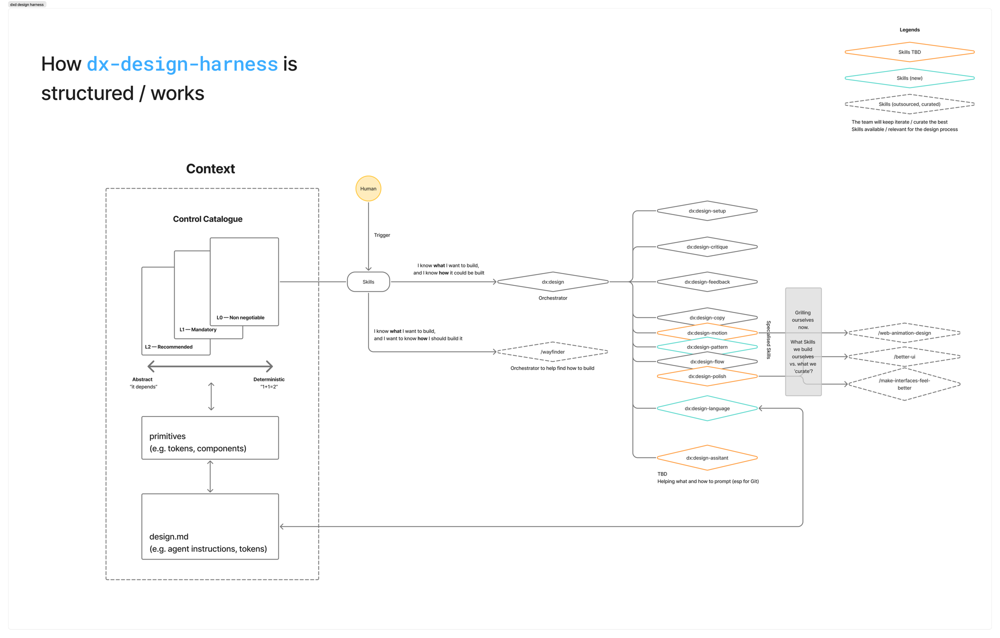

dx-harness · official launch · v0.4
dx-harness is a Claude Code plugin that teaches your agent what good design is. It puts our quality bar within reach of every builder, with or without a designer in the room. It is live today for every product repo in DXD.
My job is the quality of craft across everything this org ships. The honest math of that job: we have more products than designers. Some teams have full design support. Many share a fraction of a designer, and some have none. All of them ship to the same teachers, and teachers don't grade us on our org chart.
A quality bar that lives in review meetings and in designers' heads covers whoever a designer can sit beside, and nothing else. It doesn't scale by hiring, and it doesn't survive handover. For years the honest answer to "how does the bar hold across the whole portfolio" has been heroics.
Designers here design in code now. Real screens, in the product repo, built in conversation with an agent. The agent is fast, and it will produce an interface for any prompt you give it. So will every other builder's agent, designer or not. Output stopped being the constraint. The bar did not move.
What it won't hold is a bar. Ask twice and you get two different answers. It has read the whole internet and learned the average of it, and the average is slop: purple gradients, cards nested in cards, copy that says "streamline" and means nothing. It also knows nothing about your product. Your colour, your voice, the reason your buttons look the way they do.
We stopped trying to fix that with better prompting. We fixed the context instead, and moved the bar out of our heads and into the repo, where it travels with the code.
One plugin. Install it in a product repo and everyone who opens Claude Code there works against the same standard: designer, engineer, or agent. Four parts do the work.
You open Claude Code in your repo and type the screen you want: "design a student profile page". The orchestrator reads the intent, loads the catalog and your DESIGN.md, asks its questions, and runs the specialists. When the work is done, the review checks the result against the same two context files the session started from. Context in at the start, checked against at the end.

There are many harnesses and skill packs for agents now. Most are deterministic: rules in, one exact answer out. That is the right shape for lint rules and commit hooks. It is the wrong shape for design, because design is the practice that never had exact answers. Ask a designer where the button goes and you'll hear "it depends". They're right. A harness that pretends otherwise flattens every screen into the same safe answer.
So this one separates arithmetic from judgment, and the catalog is drawn on exactly that spectrum: every control sits somewhere between deterministic and abstract. Contrast is measured. Token discipline is a script. But a judgment rule states what a reviewer weighs, never what to conclude. The loop diverges before it converges: the orchestrator brings you two or three directions, and you choose. The catalog is the floor. What you and your agent build above it is still design.
Most agent tooling reads code and stops there. This one looks at screens. The review captures the rendered page and grades what it sees, state by state, under one evidence rule: a state nobody saw is a state nobody verified. You look at the same captures it grades, so feedback arrives the way designers already work: see it, then fix it.
That matters more than it sounds. Designers are the people who make things visual, not the people who write the most text. The taste you built by looking at thousands of screens is not wasted here. It is the input the loop is designed around.
Designers built this harness, through a designer's lens, knowing where the pain is because it is ours. So there is nothing to memorise. Two commands install it. One skill sets up your repo. After that you type what you want in plain language and the orchestrator takes it from there.
We tested the whole path with one of our least technical designers, and they shipped. That is the bar we hold: if the setup needs an engineer, it's a bug.
Designers are the main users, and the harness is built through their lens. But read the four parts again: a codified bar, checks that run in every session, a review that grades every state. None of it needs a designer in the room.
That is the org-level point. A team with no design support gets the floor: tokens that hold, contrast that passes, states that exist, copy without slop. Not the ceiling a designer would reach, but far above what that team could ship before. And the designers we do have stop spending their hours policing that floor. Design review changes from catching token drift to arguing about the 20% that deserves argument.
Systems beat heroics. A standard that lives in documents dies in documents. This one lives in the tooling: it installs in two commands, runs in every session, and gets stricter through recorded decisions. That is how a small design org holds one bar across a large portfolio.
Standards documents rot. This one is wired so it can't rot quietly. The site that documents the catalog reads the same YAML file the checks enforce. A validator fails the build when any doc drifts from the catalog. When a rule doesn't fit your case, you waive it with a written reason, and a waiver that keeps recurring becomes a proposal to change the rule.
The first end-to-end run found real gaps in our own checks: a validator that skipped moved files, a contrast check that failed correct code. We fixed the checks and kept the findings as decision records. The standard gets stricter the same way code does: by review.
The harness runs where Claude Code runs: the CLI, the desktop app, and the web app. Docs and quick start live at https://dx-harness.example (final domain to follow).
Install the plugin. In Claude Code, in your product repo:
/plugin marketplace add transformteamsg/dx-harness
/plugin install dx-harness@dx-harnessOn Claude Desktop and the web app, add the marketplace and install from the plugin directory. No command line needed.
Run setup once. The design checks need Python 3 and
PyYAML. /dx-harness:dx-design-setup walks you through the
checklist and generates your repo's DESIGN.md.
Type what you want to build. "Design the empty state
for the marks page." The orchestrator takes it from there. To browse all
21 skills, type /dx and they surface.